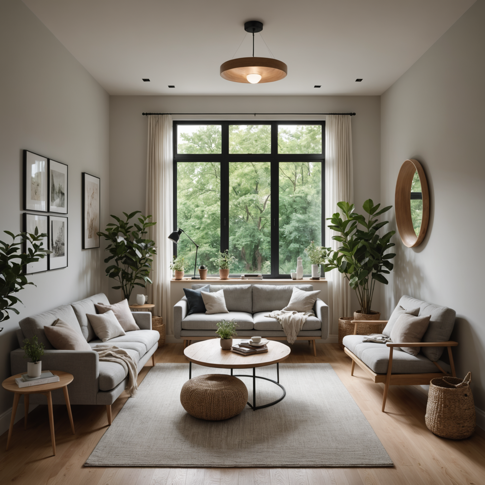

November 19, 2025
Capturing Whispers: The Art of Recognizing Subtle Creative Insights
Learn to recognize and capture subtle creative insights that emerge during quiet moments, transforming gentle inspirations into fully realized projects.
In the rush of daily life, our most profound creative insights often arrive not with fanfare, but as gentle whispers in moments of stillness. These subtle creative impulses—fleeting impressions, half-formed images, quiet intuitions—represent the raw material of artistic transformation. Yet many creators struggle to recognize these delicate signals, letting them dissolve back into the silence from which they emerged.
The practice of capturing whispers requires developing a new kind of attentiveness, one that honors the quiet voice of inner imagery and treats each subtle insight as a seed worthy of cultivation. This article explores strategies for tuning into your inner creative voice, documenting fleeting ideas, and transforming gentle inspirations into fully realized projects.
The Nature of Subtle Creative Insights
Creative insights exist on a spectrum of intensity. While breakthrough moments grab our attention with their clarity and force, subtle insights operate differently. They arrive as impressions rather than declarations, as possibilities rather than certainties. Understanding their unique characteristics helps us recognize them when they appear.
Subtle creative insights often manifest as:
- Fragmentary visual impressions that lack complete form
- Emotional resonances without clear narrative content
- Intuitive pulls toward certain colors, textures, or compositions
- Vague sensations of "rightness" about particular aesthetic directions
- Quiet curiosities that persist without demanding immediate attention
These whispers of creativity differ from more forceful inspirations in their gentleness and ambiguity. They don't announce themselves with urgency, making them easy to overlook or dismiss. Yet within their quiet presence lies tremendous potential for artistic intuition and aesthetic transformation.
Creating Conditions for Recognition
Before we can capture subtle insights, we must first create the internal and external conditions that allow us to recognize them. This involves cultivating both environmental stillness and mental receptivity—a state of mindful creation where the inner creative voice can be heard.
Establishing Your Silent Studio
The concept of a silent studio extends beyond physical space to encompass a mental state of receptive awareness. Whether you work in a dedicated room or a corner of your home, creating conditions for silent creativity involves minimizing external distractions while maximizing internal attention.
Begin by designating specific times for quiet contemplation—periods when you're not actively creating but simply being present with your creative consciousness. These might be early morning sessions before the day's demands arise, or evening periods when the world naturally quiets. During these times, resist the urge to immediately produce or perform. Instead, practice the art of receptive waiting.
Your physical environment should support this receptivity. Soft, natural lighting creates an atmosphere conducive to inner imagery. Minimal visual clutter allows your attention to turn inward rather than being captured by external stimuli. Consider incorporating elements that engage your senses gently—the subtle scent of incense, the quiet sound of ambient music, or the tactile presence of natural materials.
Developing Receptive Awareness
Recognizing subtle insights requires a particular quality of attention—one that's alert yet relaxed, focused yet open. This receptive awareness differs from the concentrated attention we bring to active problem-solving or the diffuse attention of daydreaming. It's a middle state, a gentle vigilance that notices without grasping.
Practice this awareness through simple exercises. Sit quietly and observe your inner landscape without trying to direct or control it. Notice what images, feelings, or impressions arise naturally. When your mind wanders to practical concerns or judgments, gently return to observation. This isn't meditation in the traditional sense, but rather a creative form of mindful presence.
Over time, this practice trains you to recognize the subtle signals of creative emergence. You begin to distinguish between mental noise and genuine creative impulses, between anxious thoughts and authentic artistic intuition. The whispers become clearer not because they grow louder, but because you become more attuned to their frequency.
Methods for Documenting Fleeting Ideas
Once you've developed the capacity to recognize subtle insights, the next challenge is capturing them before they dissolve. Fleeting ideas require immediate, gentle documentation—methods that preserve their essence without forcing them into premature form.
The Whisper Journal
A whisper journal serves as a dedicated space for capturing subtle creative insights in their raw, unrefined state. Unlike a traditional sketchbook or notebook, a whisper journal embraces incompleteness and ambiguity. Its purpose isn't to produce finished ideas but to preserve the seeds of possibility.
Keep your whisper journal always accessible during your silent studio sessions. When an insight arises, capture it immediately using whatever method feels most natural—quick sketches, color swatches, single words, abstract marks, or brief phrases. Don't worry about coherence or completeness. The goal is to create a trace, a reminder that can later trigger the full memory of the insight.
Effective Whisper Journal Techniques:
- Impression Mapping:Create abstract visual maps that capture the emotional or aesthetic quality of an insight rather than its literal content
- Fragment Collection:Record disconnected elements—a color combination, a texture description, a compositional impulse—without forcing them into relationship
- Temporal Notation:Note the time, lighting conditions, and your emotional state when insights arise, helping you identify patterns in your creative receptivity
- Sensory Anchoring:Describe insights through multiple senses, creating richer memory triggers for later exploration
Digital Capture for Visual Emergence
While analog methods offer unique benefits, digital tools provide powerful capabilities for capturing and exploring subtle insights. Tools like DiffusionBee allow you to translate vague impressions into visual form, creating concrete representations of abstract intuitions.
When a subtle insight arises, you can use text-to-image generation to explore its visual possibilities without the pressure of manual execution. Describe the impression in simple terms—the mood, colors, or abstract qualities you sense—and let the AI generate interpretations. These generated images serve not as final works but as visual thinking tools, helping you clarify and develop your initial intuition.
This approach proves particularly valuable for insights that resist verbal description. Sometimes we sense an aesthetic direction without being able to articulate it clearly. By experimenting with different prompts and parameters, you can gradually refine your understanding of what you're perceiving internally, using the generated images as mirrors for your inner imagery.
Voice Memos and Stream-of-Consciousness Recording
Some insights arrive more readily through language than through visual representation. For these moments, voice recording offers an immediate, low-friction capture method. Simply speak your impressions aloud, allowing thoughts to flow without editing or organizing.
The key is to maintain the stream-of-consciousness quality of the original insight. Don't pause to find the perfect words or construct coherent sentences. Let your verbal capture mirror the fragmentary, associative nature of the insight itself. Later, when you review these recordings, the raw quality of your speech will help trigger the full memory of the creative moment.
Transforming Whispers into Realized Projects
Capturing subtle insights is only the beginning. The true art lies in nurturing these delicate seeds into fully realized creative projects. This transformation requires patience, trust, and a willingness to let ideas develop at their own pace.
The Incubation Period
After capturing an insight, resist the urge to immediately develop it into a finished work. Instead, allow it to incubate. Return to your whisper journal regularly, reviewing captured insights without judgment or pressure. Some will naturally fade, revealing themselves as passing impressions rather than genuine creative seeds. Others will persist, growing stronger and clearer over time.
During this incubation period, practice what might be called "gentle attention." Think about the insight occasionally, but don't force it. Let it occupy the background of your awareness while you engage in other activities. Often, the insight will develop on its own, revealing new dimensions and possibilities without conscious effort.
This patience honors the natural rhythm of idea formation. Just as seeds need time in darkness before sprouting, creative insights need time in the unconscious before they're ready for conscious development. Rushing this process often results in forced, incomplete work that fails to capture the original insight's potential.
Exploratory Development
When an insight feels ready for development, begin with exploration rather than execution. Create multiple small studies that investigate different aspects of the original impression. If working visually, generate variations using different color palettes, compositions, or styles. If working with concepts, write multiple brief descriptions approaching the idea from different angles.
This exploratory phase serves several purposes. It helps you understand the insight more deeply, revealing which aspects resonate most strongly. It builds confidence by demonstrating that the insight has substance and potential. And it generates material that can later be synthesized into a more complete work.
Exploratory Development Strategies:
- Create time-limited studies (15-30 minutes each) to prevent overthinking
- Work in series, generating 5-10 variations before evaluating any single piece
- Alternate between different media or approaches to discover unexpected possibilities
- Document your process, noting which directions feel most aligned with the original insight
- Share explorations with trusted collaborators for fresh perspectives
Synthesis and Realization
Eventually, through incubation and exploration, the path to realization becomes clear. You'll sense which direction best honors the original insight while also serving your broader creative vision. At this point, commit to developing a complete work.
During synthesis, maintain connection with the original whisper. Regularly return to your initial capture—the journal entry, voice memo, or generated image—to ensure you're staying true to the insight's essence. It's easy to drift away from the original inspiration as technical concerns and creative decisions accumulate. These check-ins help you maintain alignment.
Remember that realization doesn't mean perfection. A realized project is one that successfully translates the subtle insight into tangible form, making the invisible visible. It may be rough, experimental, or unconventional. What matters is that it captures and communicates something of the original whisper's quality and meaning.
Cultivating Long-Term Sensitivity
The practice of capturing whispers isn't a technique to master and set aside, but rather a lifelong cultivation of creative sensitivity. Over time, your capacity to recognize and work with subtle insights deepens, becoming an integral part of your artistic practice.
Building a Practice of Stillness
Make regular periods of receptive silence a non-negotiable part of your creative routine. These don't need to be long—even 15 minutes of quiet presence can yield valuable insights. What matters is consistency. Daily practice trains your awareness to remain alert to subtle signals even during busy, active periods.
Consider these sessions as essential creative work, not as preparation for "real" work. The insights that emerge during stillness are often more original and personally meaningful than those generated through active brainstorming or forced creativity. By honoring this quiet time, you're investing in the deepest sources of your creative vision.
Trusting the Process
Working with subtle insights requires trust—trust that quiet impressions have value, trust that ideas will develop in their own time, trust that your inner creative voice knows what it's doing. This trust develops gradually through experience. Each time you successfully transform a whisper into a realized project, your confidence in the process grows.
When doubt arises—and it will—return to your whisper journal. Review past insights that have blossomed into meaningful work. This evidence of the process's validity helps sustain your commitment during periods when insights feel scarce or unclear.
Integrating Technology Mindfully
Tools like DiffusionBee and other AI-assisted creative platforms can enhance your ability to work with subtle insights, but they require mindful integration. Use them as extensions of your creative perception rather than replacements for it. Let technology help you explore and develop insights, but maintain your own judgment about which directions to pursue.
The goal is to create a hybrid practice that combines the depth of human intuition with the exploratory power of computational tools. Your subtle insights provide the direction and meaning; technology provides rapid iteration and visual thinking support. Together, they enable a creative process that's both deeply personal and technically sophisticated.
Conclusion: The Power of Gentle Attention
In a culture that often celebrates dramatic breakthroughs and sudden inspiration, the practice of capturing whispers offers an alternative path—one that honors the quiet, gradual emergence of creative vision. By developing sensitivity to subtle insights, you access a deeper wellspring of creativity, one that flows from authentic inner imagery rather than external pressure or forced innovation.
The strategies outlined in this article—creating conditions for recognition, documenting fleeting ideas, and patiently transforming whispers into realized projects—form a comprehensive approach to silent creativity. This approach requires dedication and trust, but it yields work that's uniquely personal and aesthetically resonant.
As you develop your practice of capturing whispers, remember that the goal isn't to capture every insight or transform every whisper into a finished work. Some insights serve simply as moments of connection with your creative consciousness, valuable in themselves regardless of whether they lead to tangible output. Others will naturally develop into projects that express your deepest artistic vision.
The silent studio—whether physical space or mental state—becomes a sanctuary where ideas take shape from stillness. In this space, gentle attention reveals what forceful effort cannot: the subtle patterns of your unique creative perception, the quiet voice of artistic intuition, and the transformative power of ideas that emerge not with thunder, but with whispers.